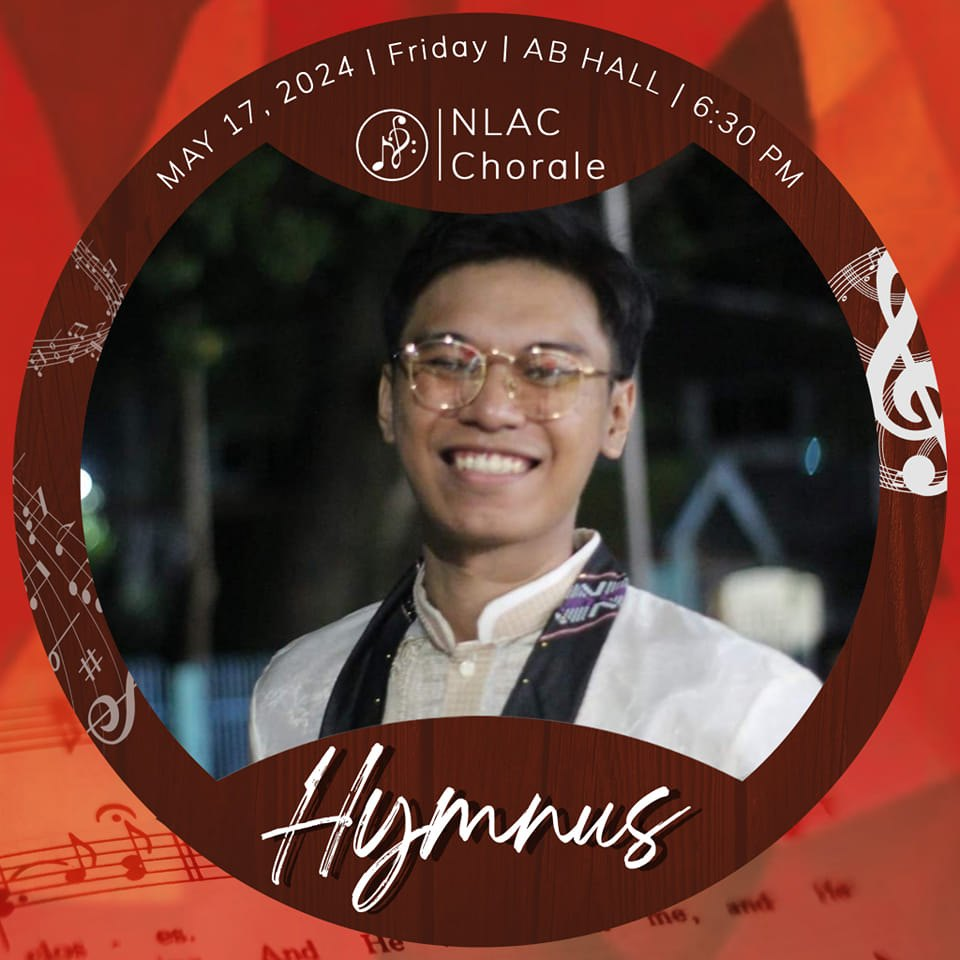
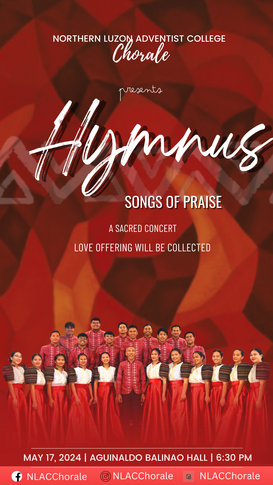
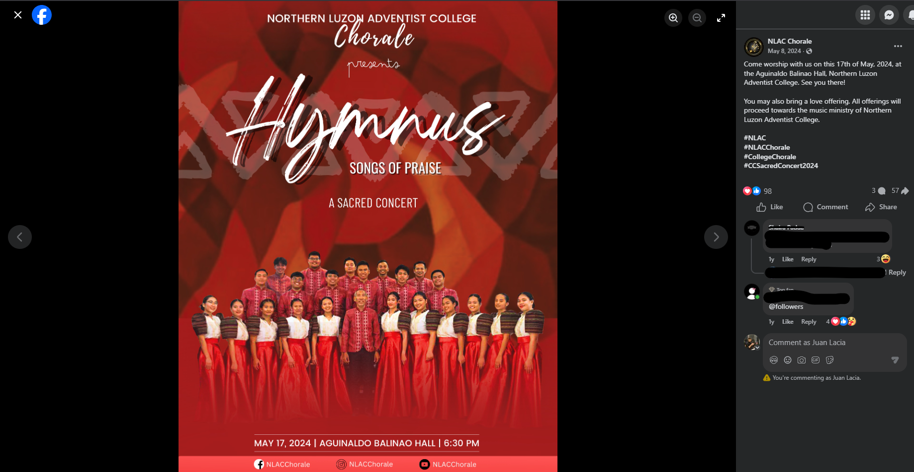
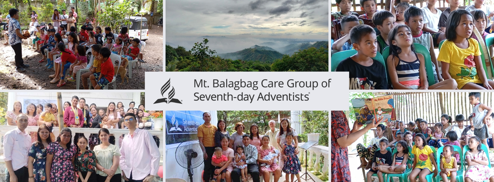

Digital Publishing · Academic Case Study
Alkan x Supreme Product Catalog
A fictitious product catalog cover designed as a case study for a Digital Publishing class, imagining a streetwear collaboration between Alkan — a fictional brand — and Supreme. The brief required applying commercial visual hierarchy principles to a high-impact cover layout, demonstrating competency in brand pairing, typographic scale, and asset production.
The design deliberately mirrors real Supreme drop aesthetics — bold typography at extreme scale, minimal colour palette, and deliberate negative space — while introducing Alkan as a credible co-brand through placement and weight balance.
Digital Publishing · Institutional Design · Academic Case Study
NLAC Institutional Prospectus
An institutional brochure produced as a case study for a Digital Publishing class, designed to represent Northern Luzon Adventist College in a formal print-ready format. The project required translating factual institutional content into a structured, visually coherent multi-panel layout — balancing editorial photography, typographic hierarchy, and brand-appropriate tone.
The challenge was producing something that read as professionally commissioned rather than student-produced — achieved through disciplined grid usage, restrained colour application, and editorial photography placement that supported rather than competed with the copy.

Social Media · Viral Branding · Digital Campaign
Social Media Campaign: "Hymnus" Viral Branding
Developed a custom, limited-edition Facebook profile frame for the NLAC Chorale "Hymnus" concert to drive organic social media reach and community engagement. The frame was engineered as a transparent overlay that maintained brand integrity across 50+ unique user profiles — turning choir members into active promotional channels without requiring any additional action from them beyond opting in.
Strategic outcome: unified the organisation's digital presence and successfully converted the choir membership into a distributed promotional network, resulting in measurably increased event visibility ahead of the concert date.
Digital Marketing · Cross-Platform Campaign · Content Production
Integrated Cross-Platform Campaign: "Hymnus" Concert
Developed a comprehensive digital marketing suite for a sacred concert, ensuring consistent branding across Facebook and Instagram platforms. Engineered platform-specific assets — 9:16 Stories and Standard Feed posts — that prioritised information legibility and brand recognition across different display contexts.
Strategic outcome: achieved high-impact organic reach, securing nearly 100 unique interactions and over 50 shares within a single primary campaign post — without paid promotion. The campaign demonstrated that disciplined visual consistency and targeted content formats can drive meaningful reach on zero ad spend.




Brand Launch · Community Organisation · Digital Operations
Brand Launch & Digital Operations: Mt. Balagbag Care Group
Tasked with establishing immediate credibility and a professional digital footprint for a newly founded organisation operating in a rural location — starting from zero: zero followers, zero brand assets, zero online presence.
Developed a multi-asset branding suite and optimised the Meta Business Suite backend to ensure 100% operational visibility from launch day. Maintained a consistent posting and engagement schedule that built genuine community trust rather than inflated vanity metrics.